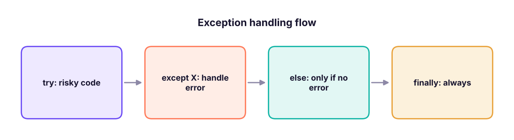

Files, Exceptions, JSON and CSV
Read and write text, CSV and JSON files safely with pathlib and with-blocks, handle errors with try/except/else/finally, raise your own exceptions, and log what happened, using a small "load a messy file" project.
- Open, read and write text files with with-blocks and pathlib
- Read and write CSV with the csv module and JSON with the json module
- Handle errors with try, except, else and finally, and catch specific exceptions
- Raise exceptions and define custom exception classes
- Use logging instead of print for programs that run unattended
Files and paths
Use pathlib.Path for paths (works on Windows, macOS and Linux) and a with block to open files: the file is closed automatically, even if an error happens.
from pathlib import Path
folder = Path("demo_files"); folder.mkdir(exist_ok=True)
notes = folder / "notes.txt" # / joins path parts
with open(notes, "w", encoding="utf-8") as f: # "w" overwrites, "a" appends, "r" reads (default)
f.write("Line one\n")
f.writelines(["Line two\n", "Line three\n"])
with open(notes, "a", encoding="utf-8") as f: print("Line four", file=f)
print(notes.read_text(encoding="utf-8"))
print(notes.exists(), notes.name, notes.stem, notes.suffix, notes.stat().st_size, "bytes")Line one Line two Line three Line four True notes.txt notes .txt 39 bytes
with open(notes, encoding="utf-8") as f:
for i, line in enumerate(f, 1): # iterate line by line: constant memory for huge files
print(i, line.rstrip("\n"))
with open(notes, encoding="utf-8") as f: lines = f.read().splitlines()
print(lines, sorted(p.name for p in folder.glob("*.txt")))1 Line one 2 Line two 3 Line three 4 Line four ['Line one', 'Line two', 'Line three', 'Line four'] ['notes.txt']
| Mode | Meaning |
|---|---|
"r" |
Read (error if missing) |
"w" |
Write (creates or overwrites) |
"a" |
Append to the end |
"x" |
Create; error if it exists |
"b" suffix |
Binary ("rb", "wb") for images, Excel, Parquet |
encoding="utf-8" avoids garbled ₹, é or Hindi text and avoids differences between Windows and Linux defaults.
CSV files
The standard csv module handles quoting and commas inside values. (For analysis you will usually use pandas.read_csv, Lesson 16.)
import csv
rows = [{"id": 1, "city": "Pune", "note": "fast, friendly"}, {"id": 2, "city": "Delhi", "note": 'said "ok"'}]
with open(folder / "people.csv", "w", newline="", encoding="utf-8") as f:
w = csv.DictWriter(f, fieldnames=["id", "city", "note"])
w.writeheader(); w.writerows(rows)
print((folder / "people.csv").read_text(encoding="utf-8"))
with open(folder / "people.csv", newline="", encoding="utf-8") as f:
for r in csv.DictReader(f): print(r) # every value is a stringid,city,note
1,Pune,"fast, friendly"
2,Delhi,"said ""ok"""
{'id': '1', 'city': 'Pune', 'note': 'fast, friendly'}
{'id': '2', 'city': 'Delhi', 'note': 'said "ok"'}# Stream a real 6,000-line CSV without pandas: total sales per region
from collections import defaultdict
totals = defaultdict(float)
with open("superstore_sales.csv", newline="", encoding="utf-8") as f:
for row in csv.DictReader(f): totals[row["region"]] += float(row["sales"])
print({k: round(v / 1e6, 1) for k, v in sorted(totals.items())}){'East': 46.5, 'North': 49.0, 'South': 54.0, 'West': 52.0}JSON files
JSON maps to Python like this: object ↔ dict, array ↔ list, string ↔ str, number ↔ int/float, true/false ↔ True/False, null ↔ None.
import json
config = {"source": "superstore_sales.csv", "regions": ["North", "South"], "min_sales": 1000, "debug": False, "owner": None}
with open(folder / "config.json", "w", encoding="utf-8") as f: json.dump(config, f, indent=2)
with open(folder / "config.json", encoding="utf-8") as f: loaded = json.load(f)
print(loaded == config, loaded["regions"], json.dumps({"price": 4500.5, "ok": True, "x": None}))
print(json.dumps({"city": "Pune", "₹": 1}, ensure_ascii=False))True ['North', 'South'] {"price": 4500.5, "ok": true, "x": null}
{"city": "Pune", "₹": 1}json.dump/json.load work with files; json.dumps/json.loads work with strings (the "s" is for string). Dates and sets are not JSON types: convert them first (d.isoformat(), list(s)).
Exceptions
An exception is Python's way of reporting an error. Unhandled, it stops the program and prints a traceback. Handled, your program can recover.
def safe_ratio(a, b):
try:
result = a / b
except ZeroDivisionError:
print(" cannot divide by zero")
return None
except TypeError as e:
print(" wrong types:", e)
return None
else: # runs only when no exception happened
return round(result, 2)
finally: # always runs: clean-up
print(" checked", a, b)
print(safe_ratio(10, 4)); print(safe_ratio(1, 0)); print(safe_ratio("10", 2))checked 10 4 2.5 cannot divide by zero checked 1 0 None wrong types: unsupported operand type(s) for /: 'str' and 'int' checked 10 2 None

Common built-in exceptions
| Exception | Typical cause |
|---|---|
ValueError |
Right type, wrong value: int("abc") |
TypeError |
Wrong type: "a" + 1 |
KeyError |
Missing dict key |
IndexError |
List index out of range |
FileNotFoundError |
Missing file |
ZeroDivisionError |
Divide by zero |
AttributeError |
Object has no such attribute or method |
ImportError / ModuleNotFoundError |
Package not installed |
tests = [lambda: int("abc"), lambda: "a" + 1, lambda: {}["x"], lambda: [1][5], lambda: open("missing.csv"), lambda: None.upper()]
for t in tests:
try: t()
except Exception as e: print(f"{type(e).__name__:<18} {e}")ValueError invalid literal for int() with base 10: 'abc' TypeError can only concatenate str (not "int") to str KeyError 'x' IndexError list index out of range FileNotFoundError [Errno 2] No such file or directory: 'missing.csv' AttributeError 'NoneType' object has no attribute 'upper'
except: pass or except Exception: pass hides bugs. Catch the specific exceptions you expect, and let unexpected ones surface (or log them and re-raise).
Raising your own exceptions
class DataQualityError(Exception):
"""Raised when an input file fails validation."""
def validate(df):
missing = {"order_id", "sales"} - set(df.columns)
if missing: raise DataQualityError(f"missing columns: {sorted(missing)}")
if (df["sales"] < 0).any(): raise ValueError("negative sales found")
return True
import pandas as pd
for d in (pd.DataFrame({"order_id": [1], "sales": [5]}), pd.DataFrame({"order_id": [1]}), pd.DataFrame({"order_id": [1], "sales": [-2]})):
try: print("valid:", validate(d))
except (DataQualityError, ValueError) as e: print(type(e).__name__, "->", e)valid: True DataQualityError -> missing columns: ['sales'] ValueError -> negative sales found
Use raise ... from e to wrap a low-level error in a clearer one while keeping the original cause.
Logging
print is for interactive work. Programs that run on a schedule (ETL jobs, APIs) should use logging, which adds timestamps and levels and can write to files.
import logging, io
stream = io.StringIO()
log = logging.getLogger("etl"); log.handlers.clear(); log.setLevel(logging.INFO)
h = logging.StreamHandler(stream); h.setFormatter(logging.Formatter("%(levelname)s | %(name)s | %(message)s")); log.addHandler(h)
log.debug("not shown: below INFO"); log.info("loaded 6,323 rows"); log.warning("12 rows had blank city")
try: 1 / 0
except ZeroDivisionError: log.exception("step failed") # logs the traceback too
print(stream.getvalue().splitlines()[:3])['INFO | etl | loaded 6,323 rows', 'WARNING | etl | 12 rows had blank city', 'ERROR | etl | step failed']
Levels from low to high: DEBUG, INFO, WARNING, ERROR, CRITICAL.
Project: load a messy file safely
messy = """order_id,amount,city
1,1200,Pune
2,abc,Delhi
3,,Kochi
4,950,
5,-40,Goa
"""
(folder / "messy.csv").write_text(messy, encoding="utf-8")
def load_orders(path):
good, bad = [], []
with open(path, newline="", encoding="utf-8") as f:
for lineno, row in enumerate(csv.DictReader(f), start=2):
try:
amount = float(row["amount"])
if amount < 0: raise ValueError("negative amount")
if not row["city"]: raise ValueError("blank city")
good.append({"order_id": int(row["order_id"]), "amount": amount, "city": row["city"]})
except ValueError as e:
bad.append((lineno, str(e)))
return good, bad
good, bad = load_orders(folder / "messy.csv")
print("good:", good); print("rejected:", bad)
with open(folder / "rejected.json", "w", encoding="utf-8") as f: json.dump(bad, f)
import shutil; shutil.rmtree(folder) # tidy up the demo foldergood: [{'order_id': 1, 'amount': 1200.0, 'city': 'Pune'}]
rejected: [(3, "could not convert string to float: 'abc'"), (4, "could not convert string to float: ''"), (5, 'blank city'), (6, 'negative amount')]Real pipelines do exactly this: keep the good rows, quarantine and report the bad ones, never crash on one bad line.
Summary
- Use
pathlib.Pathandwith open(path, mode, encoding="utf-8"); iterate a file line by line for big files. csv.DictReader/DictWriterhandle quoting (values are strings);json.load/dumpconvert JSON ↔ Python.try/except SpecificError/else/finally; never use a bareexcept: pass.raiseyour own exceptions (subclassException) to signal bad data clearly.- Use
loggingwith levels for unattended programs.
1. Why use with open(...) as f:?
2. What does mode "w" do to an existing file?
"a" to append and "x" to refuse overwriting.3. When does the else block of a try statement run?
finally is the block that always runs.4. What does json.loads take?
load takes a file object; loads takes a string.5. What exception does int("abc") raise?
6. Why prefer logging over print for scheduled jobs?
(1) Write a function that counts lines, words and characters in a text file. (2) Read superstore_sales.csv with csv.DictReader and count rows per category. (3) Save that result as JSON and load it back. (4) Write to_int(text, default=0) that returns the default on ValueError. (5) Raise a custom EmptyFileError when a file has no data rows.
Show solution
def wc(path):
text = Path(path).read_text(encoding="utf-8")
return len(text.splitlines()), len(text.split()), len(text)
from collections import Counter
with open("superstore_sales.csv", newline="", encoding="utf-8") as f:
counts = Counter(r["category"] for r in csv.DictReader(f))
Path("cat.json").write_text(json.dumps(counts), encoding="utf-8")
print(json.loads(Path("cat.json").read_text(encoding="utf-8")))
def to_int(text, default=0):
try: return int(text)
except ValueError: return default
class EmptyFileError(Exception): pass
def check(path):
with open(path, encoding="utf-8") as f:
if len(f.read().splitlines()) < 2: raise EmptyFileError(path)Q: How do you read a 10 GB file in Python?
Iterate it line by line (for line in f), or read in chunks (pd.read_csv(..., chunksize=...)), so memory stays constant.
Q: Difference between except Exception and a bare except?
A bare except also catches KeyboardInterrupt and SystemExit; catch specific exceptions where possible.
Q: What is finally used for?
Clean-up that must always happen, such as closing connections or releasing locks.
Q: How do you handle bad rows in an ETL job? Validate each row, keep good rows, write rejects with the reason to a quarantine file or table, log counts, and alert if the reject rate is too high.
Practise more online
Free, trusted places to test yourself on this topic. Links open the original site in a new tab.